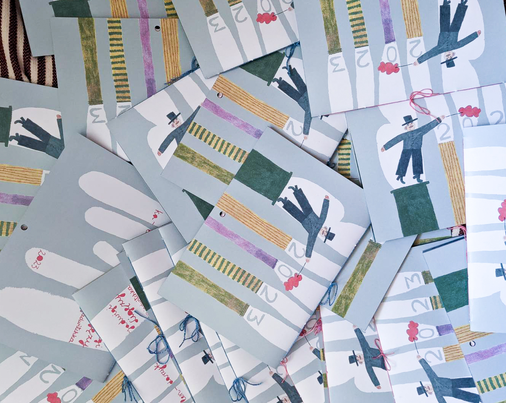
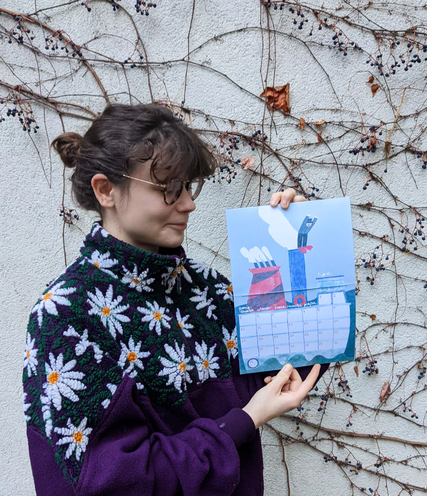
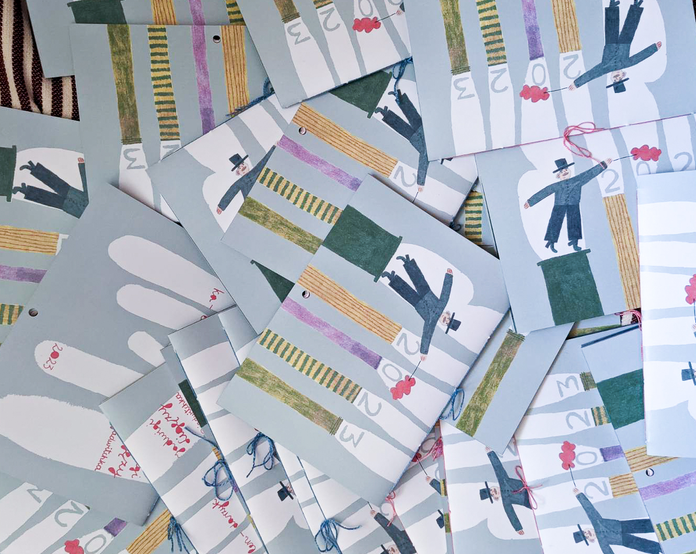
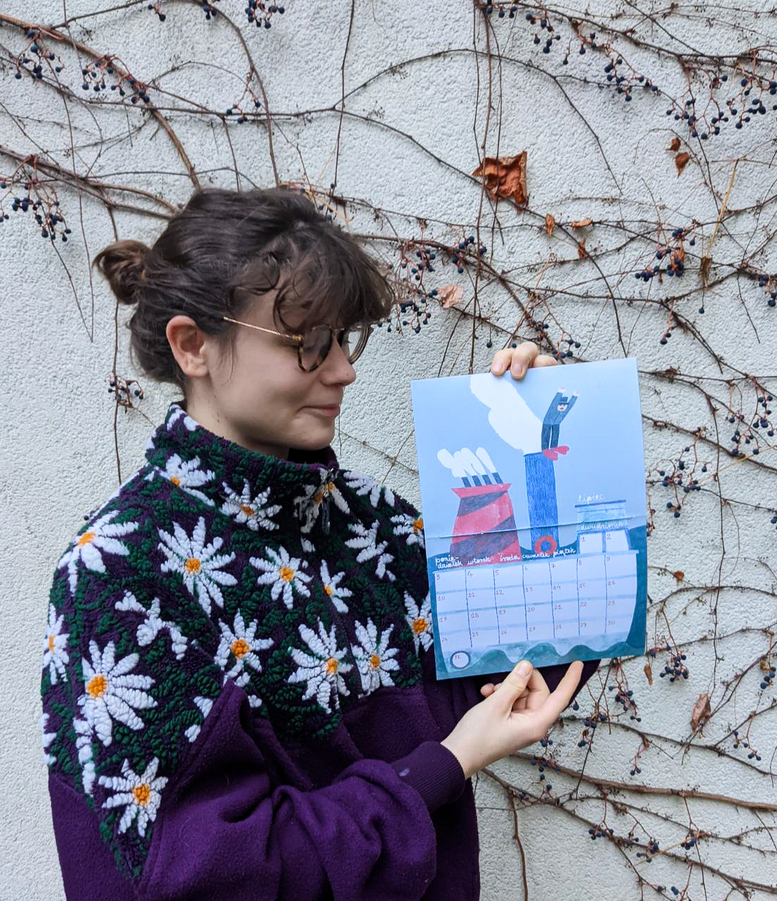

calendar 2023
dedicated to chimney sweeps
In the region where I'm from in Poland every year chimney sweeps come to check your chimney and then they give you a calendar with photos of various chimney sweeps. I loved this tradition but in the past few years, they didn't come. My friends suggested creating this colourful little calendar with them and I felt honoured to do that.
Just like the calendar from the previous year, this one was entirely home-made, I printed ready designs and sewed the pages together
Paragraph 2